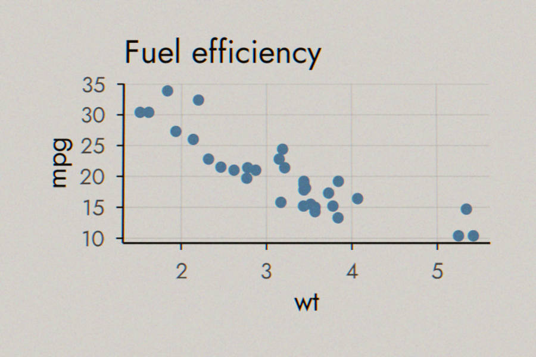
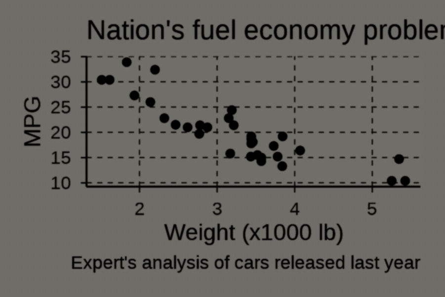
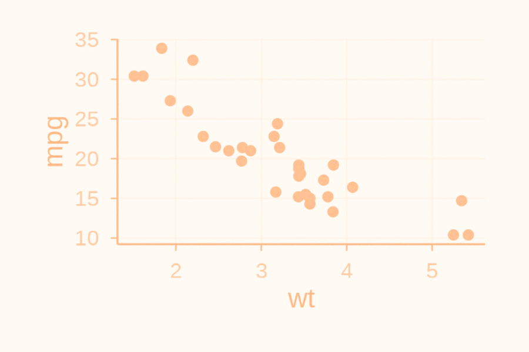
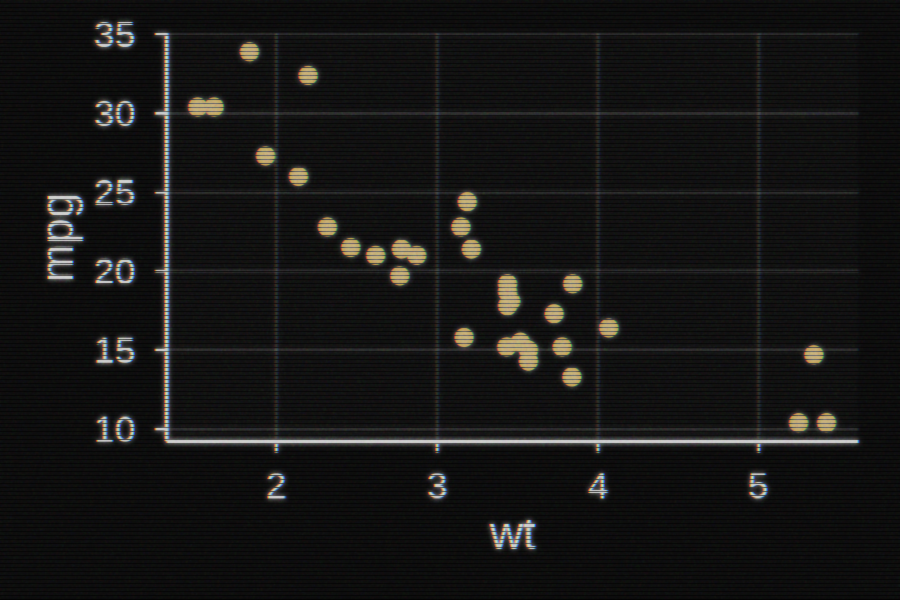

Getting started with ggpatina
ggpatina.RmdIntroduction
ggpatina is a small toolkit for giving your
ggplot2 figures an analog makeover. Effects are applied
after the plot is rendered: you build a normal plot, convert it
to a magick
image with as_magick(), and then pass that image through
one or more patina filters. The package also includes a few lightweight
themes and helpers for period fonts so that the whole graphic carries
the vibe. Code chunks below are evaluated when the vignette is built, so
any plots they produce will show up automatically. This vignette walks
through several effects to illustrate the typical workflow.
Blueprint style
We’ll start with a basic scatter plot and gradually turn it into a blueprint.
# build the plot as usual
base <- ggplot(mtcars, aes(wt, mpg)) +
geom_point()
# swap in the blueprint theme
p_bp <- base + theme_blueprint()
# convert to a magick image and apply the blueprint patina
img <- as_magick(p_bp)
patina_blueprint(img)Slide transparency
The transparency slide effect mimics a projected 35mm slide. We build on the same base plot so you can see the incremental steps.
# start from the base scatter plot
base <- ggplot(mtcars, aes(wt, mpg)) + geom_point(color = "steelblue")
# add the slide-friendly theme
p_slide <- base + theme_transparency()
# render to a magick image, then give it slide artifacts
img <- as_magick(p_slide)
slideify_transparency(img)
Ink bleed
Ink bleed gives a photocopied or cheaply printed feel where edges blur and ink spreads into the paper.
# reuse the base scatter plot
base <- ggplot(mtcars, aes(wt, mpg)) + geom_point()
# newspaper theme sets up the flat tones
p_news <- base + theme_newspaper()
# convert and let the ink bleed a bit
img <- as_magick(p_news)
patina_ink_bleed(img)
Kodachrome photo
Warm colors and a soft fade evoke the look of vintage Kodachrome film.
base <- ggplot(mtcars, aes(wt, mpg)) + geom_point(color = "firebrick")
p_koda <- base + theme_transparency()
img <- as_magick(p_koda)
patina_kodachrome(img)
Newscast screenshot
This effect mimics a low-resolution television capture.
base <- ggplot(mtcars, aes(wt, mpg)) + geom_point(color = "goldenrod")
p_cast <- base + theme_newscast()
img <- as_magick(p_cast)
patina_newscast(img)
Photocopy
Misaligned colors and grain suggest a worn-out photocopier.
base <- ggplot(mtcars, aes(wt, mpg)) + geom_point()
img <- as_magick(base)
patina_photocopy(img)These examples are just a starting point. Combine effects and themes to give your plots any era’s personality.